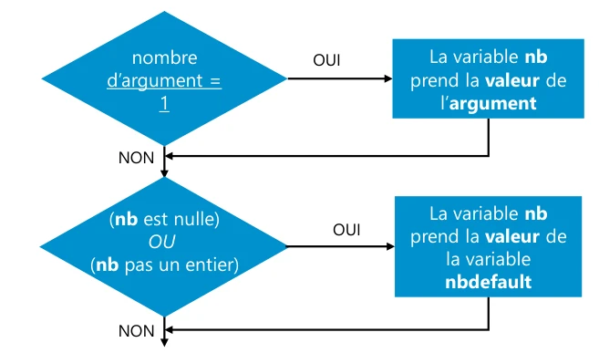
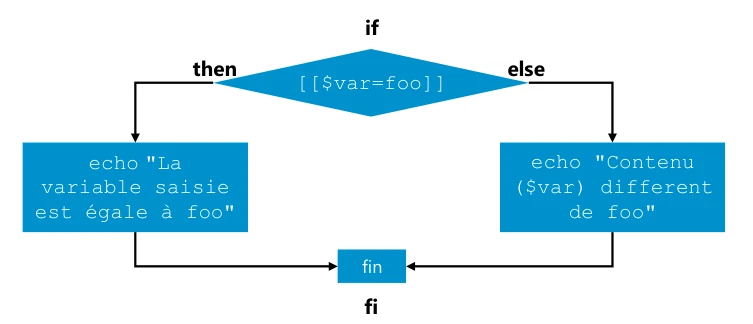
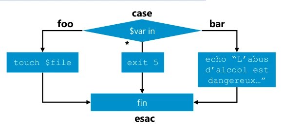

Module 06 — Exécution conditionnelle¶
La transcription du support Drive et l’aide pédagogique sont séparées pour rendre leur provenance explicite.
SOURCE DRIVE · TRANSCRIPTION DU SUPPORT
Le contenu des documents du dossier TSSR est transcrit ci-dessous, page par page. Les textes et tableaux sont intégrés à la page Web. Aucun fichier PDF, aucune diapositive entière ni aucune reproduction de page n’est affiché. Seuls des croquis ou visuels isolés et vérifiés peuvent accompagner la transcription. Les versions et les consignes restent celles des supports de formation. Les compléments IA sont conservés dans leur onglet distinct.
Support · Module 06 - Support de cours · 18 pages transcrites
Le texte, les tableaux et le code sont transcrits d’après le PDF de formation. Les sauts de ligne suivent la présentation du support. Les exemples historiques sont commentés dans le cours optimisé.
Page 1
Module 06 – Exécution conditionnelle (test, if, case)
Objectifs
- Comprendre les structures conditionnelles
- Écrire des tests
- Comparer des nombres, des chaînes
Page 2
Contextes outils et structures
de conditionnement
Contextes outils et structures de conditionnement
Dans de nombreux cas pratiques, la réalisation d’actions est conditionnée.


Dans cet exemple, la valeur de la variable nb est conditionnée au nombre d’arguments passé au script puis à la présence ou non de contenu dans cette variable.
| Condition | OUI | NON |
|---|---|---|
| nombre d’argument = 1 | La variable nb prend la valeur de l’argument. | Vérifier le contenu de nb. |
| (nb est nulle) OU (nb pas un entier) | La variable nb prend la valeur de la variable nbdefault. | Poursuivre. |
Page 3
Contextes outils et structures de conditionnement
- En Scripting Shell, pour traduire cet algorithme, nous utiliserons :
- Une structure de contrôle comme la structure if
- Une expression de test (qui sera intégrée) à la structure de contrôle.
- Ainsi, la première condition serait traduite ainsi :
| Structure de contrôle if | Test de la condition | Structure complète |
|---|---|---|
| if condition ;then nb=$1 fi | [[ $nbarg –eq 1 ]] | if [[ $nbarg –eq 1 ]] ; then nb=$1 fi |
- Dans ce module seront successivement abordées la structure if puis les expressions de tests.
L’instruction if
Page 4
L’instruction if
L’instruction if est utilisée pour structurer la réalisation conditionnée de commandes.


Si la condition est remplie, alors je fais telle action, sinon je fais telle action. Fin du si.
if [[$var=foo]]
then
echo "La variable saisie est égale à foo"
else
echo "Contenu ($var) different de foo"
fiL’instruction if
- Cette instruction requiert au minimum :
- Un début : if
- L’exécution d’une commande (un test de condition par exemple)
- L’exécution d’au moins une action si la condition est vérifiée : then
- Une fin : fi
- Cette instruction peut être complétée par :
- L’exécution d’autres actions si la condition est vérifiée
- L’exécution d’actions à réaliser si la condition n’est pas vérifiée : else
Page 5
L’instruction if
Convention de structure de la boucle if
- Il existe 2 syntaxes pour l’écriture de la structure if :
Moderne Classique
if conditionif condition ; thenthenAction1action1elseelseAction2action2fi- Dans ce support, la forme moderne de la structure sera prise pour les exemples.
- Mais vous pouvez choisir la méthode de votre choix.
L’instruction if
Utilisation minimale de if
- Dans l’exemple ci-dessous, la condition de réalisation de l’action d’affichage est conditionnée par le résultat du test.
if [[ "$LOGNAME" = root ]] ; then
echo "Ne pas se connecter en root"
fi- Autre exemple d’utilisation conditionné par le code retour d’une commande (ls) :
if ls /tmp ; then
echo "/tmp existe"
fiPage 6
L’instruction if
Utilisation de if avec else
if s’utilise souvent avec else pour choisir une action ou une autre
if [[ "$LOGNAME" = root ]] ; then
echo "Ne pas se connecter en root"
else
echo "Bienvenue sur la machine $HOSTNAME"
fiL’instruction if
Utilisation de if avec else
Il est possible de stipuler plusieurs actions dans une structure if :
if [[ "$LOGNAME" = root ]] ; then
echo "Ne pas se connecter en root"
echo "Le script va quitter"
exit 1
else
echo "Bienvenue sur la machine $HOSTNAME"
echo "Le script continue"
fiPage 7
L’instruction if
Imbrication de structures if
- Il est possible d’imbriquer des structures if entre elles. Dans l’exemple ci-dessous, on fait d’autres tests si le premier n’est pas rempli.
- Dans le cas d’imbrication d’un if dans un else, on peut utiliser la structure imbriquée elif.
Imbrication de structures if
Utilisation du elif
if <condition> ; then
<action>
else elif <condition> ; then
if <condition> ; then <action>
else<action>
<action>else
<action>fi# fin commune des 2 iffi # fin du second if
fi# fin du premier ifDémo
L'instruction if
Page 8
Évaluation des conditions
Les commandes de tests
- Le conditionnement de commandes s’appuie sur l’évaluation de conditions.
- Afin d’évaluer une ou plusieurs conditions, il est possible d’utiliser les commandes suivantes :
| Syntaxe | Description dans le support |
|---|---|
| test condition | Commande externe de test utilisable quel que soit le Shell |
| [ condition ] | Identique à la commande test |
| [[ condition ]] | Commande interne à certains Shells (dont le Bash) qui prend en charge des fonctionnalités supplémentaires |
| (( condition )) | Commande réservée à l’utilisation de tests arithmétiques |
Page 9
Les commandes de tests
- Suite à l’exécution de ces commandes, leur code retour peut avoir pour valeur :
- 0 : l’expression est vraie
- 1 : l’expression est fausse
- Dans ce cours, les tests sont réalisés au moyen de [[ ]].
- Certains éléments abordés ne sont pas pris en charge par les autres commandes de tests. [ ] et test
Critères d’évaluation
- Lors de l’évaluation d’une condition, les critères d’évaluation sont liés au type d’élément à évaluer, celui-ci pouvant être :
- Un entier (chiffre ou nombre)
- Une chaîne (mot ou phrase)
- Une composante du système de fichier (fichier, répertoire, etc.)
- Les principaux opérateurs de tests sont présentés dans ce cours.
Page 10
Critères d’évaluation
Opérateurs de comparaison sur les entiers
- Prendre garde à ce que la variable testée soit déclarée en type entier (typeset –i variable).
Comparaison sur les entiers
| Élément | Signification dans le support |
|---|---|
| -eq | égalité |
| -ne | différence |
| -gt | supérieur |
| -ge | supérieur ou égal |
| -lt | inférieur |
| -le | inférieur ou égal |
if [[ $nbre –eq 2 ]] ; then
echo 'nombre choisi : 2'
fiCritères d’évaluation
Opérateurs de comparaison sur les chaînes
if [[ $prenom = sofia ]] ; thenComparaison sur les chaînes
| Élément | Signification dans le support |
|---|---|
| = | égalité |
| != | différence |
| -n $nomvar | variable non nulle |
| -z $nomvar | variable nulle |
echo 'Bienvenue Sofia'
fi
if [[ -z $prenom ]] ; then
echo 'Merci de saisir
votre prénom'
fiPage 11
Critères d’évaluation
Opérateurs de comparaison sur les fichiers
if [[ -d $rep ]] ; thenComparaison sur les fichiers
| Élément | Signification dans le support |
|---|---|
| -d nomrep | répertoire |
| -f nomfic | fichier ordinaire |
| -w nomfic | droit d’écriture |
| -r nomfic | droit de lecture |
| -x nomfic | droit d’exécution |
| -s nomfic | taille de nomfich > 0 |
ls -l $rep
fi
if [[ -f $fic ]] ; then
cat $fic
else
echo "$fic absent"
fiCombinaison de critères
- Il est possible de cumuler plusieurs critères au sein d’un même test.
- On utilise alors les options suivantes :
| Opérateur | Combinaison de critères |
|---|---|
| && | et logique |
| || | ou logique |
| ! | négation |
| ( ) | regroupement |
if [[ -f fic1 && ( -d rep1 || -d rep2 ) ]] ; then
echo "fic1 est présent, ainsi que rep1 ou rep2"
FiPage 12
Les caractères spéciaux dans les chaînes
Les caractères spéciaux dans les chaînes
Métacaractères du Shell
- Les expressions de test sont interprétées par le Shell.
- Il est donc possible d’utiliser des caractères spéciaux dans celles-ci.
- Rappel :
| Motif | Signification |
|---|---|
| * | 0 à n caractères |
| ? | 1 caractère quelconque |
| […] | 1 caractère parmi ceux entre crochets |
| [^…] | 1 caractère autre que ceux indiqués entre crochets (ou [!...]) |
Page 13
Facteurs d’occurrence
Facteurs d’occurence
| Motif | Facteur d’occurrence |
|---|---|
| ?(…) | 0 à 1 fois l’expression |
| *(…) | 0 à n fois l’expression |
| +(…) | 1 à n fois l’expression |
| @(…) | 1 fois l’expression |
| !(…) | 0 fois l’expression |
| *(…|…) | De 0 à n fois l’expression 1 ou l’expression 2. Valable également pour les caractères ? * + @ ! |
chaine=+123
if [[ "$chaine" = ?([+-])+([0-9]) ]] ; then
echo "$chaine est un nombre valide"
fiPour la prise en compte de facteurs d’occurrences, l’option extglob doit être activée dans le Shell d’interprétation du script.
$ shopt
$ shopt -s extglobIllustration d’un cas pratique
Page 14
Illustration d’un cas pratique
- Illustration de test valide ou non une expression :
[[ -d /data ]] && {
mkdir /data/perso
cp -a /home/penthium/documents/* /data/perso
}- Dans cet exemple, le test [[ -d /data ]] vérifie l’existence ou non du répertoire /data
- Si le répertoire existe, le code retour de test est égal à 0. Le regroupement de commandes qui suit est alors effectué.
- S’il n’existe pas, le code de sortie test diffère de 0. Le regroupement de commandes est ignoré.
Illustration d’un cas pratique
- Cet exemple pourrait être intégré dans une instruction if :
if [[ -d /data ]] ; then
mkdir /data/perso
cp -a /home/penthium/documents/* /data/perso
fiPage 15
L'instruction if
Démo
Les opérateurs de tests
La structure case
Page 16
La structure case
La structure de contrôle case est adaptée au test d’un contenu (généralement stocké dans une variable) pouvant contenir un ensemble de valeurs et des actions liées à ces valeurs.
La structure case
Algorithme d’illustration
La variable var ($var) peut contenir les valeurs : « foo », « bar » ou toute autre chaîne.
| Valeur de $var | Action | Exemple |
|---|---|---|
| foo | Une action de création de fichiers est réalisée | touch $file |
| bar | Une action d’affichage est réalisée | echo “L’abus d’alcool est dangereux…” |
| Toute autre valeur (*) | Sortie du script avec un code d’erreur | exit 5 |
Début du case. On compare la valeur de $var à "foo" ou à "bar" ou à "*". Si la valeur est "foo" je fais une action. Si la valeur est "bar" je fais une autre action. Si la valeur est "*" je fais une troisième action. Fin du case.
case $var in → esac


Page 17
La structure case
Syntaxe d’utilisation
case $nomvar in
expr)
action1
action2
;;
expr2)
action
;;
esacLa structure case
Exemple d’utilisation
case $saisie in
p)La liste de valeurs possibles est
echo "la lettre est p"interprétée par le Shell, ce qui autorise
;;l’utilisation de métacaractères ou
[0-9])d’expressions complexes.
echo "un chiffre"
;;Pour le premier des cas verifiés, les
a|b)
echo "a ou b"actions qui lui sont associées sont
echo "\?"effectuées suivi de la sortie
;;immédiate de la structure. Aucun
*)autre cas ne sera appliqué.
echo "n’importe quel autre caractère"
;;
esacPage 18
La structure case
Démo
La structure case
Référence du document : 1vBhU461pGTtCLHLiCRKTvUCzXhMkCbQj · SHA-256 e712a8ded12fb87e…
Énoncé · M6 - Enoncé du TP 1 - Enchaînements conditionnels · 1 pages transcrites
Le texte, les tableaux et le code sont transcrits d’après le PDF de formation. Les sauts de ligne suivent la présentation du support. Les exemples historiques sont commentés dans le cours optimisé.
Page 1
Enchaînements conditionnels
TP1 du Module 06 - Les caractères spéciaux du Shell
Avant de démarrer ce TP, il convient d’avoir suivi les modules 1 à 6.
Objectifs
Créer un script Shell utilisant des enchainements de commandes conditionnels.
Énoncé
- A partir de l’analyse des besoins détaillée ci-dessous, réaliser un script Shell permettant d’y répondre
- Tester le bon fonctionnement de votre script
Analyse des besoins
Il vous est demandé de réaliser un script qui va afficher un message de bienvenue si tout se déroule correctement.
Le message contiendra un nom d’utilisateur qui aura été saisi, ainsi que le nom du système Linux.
Voici les contraintes :
- Le script ne prendra qu’un SEUL nom d’utilisateur en argument (ex : $ ./script_M6TP1.sh paul)
oSi aucun argument fourni, il sera demandé de le saisir
oSi plusieurs noms sont fournis : sortie du script avec code retour 1
- Si le nom saisi est "root" :
oAffiche "Le compte root est interdit" en rouge gras sur fond noir
oQuitte le script avec le code retour 2
- Affichage principal du script, seulement si un nom a bien été fourni :
Bonjour <nom>, bienvenue sur la machine <nom_de_la_machine>- A la fin du script (si pas de sortie du script) s’affichera en plus :
--- Fin du script ---Référence du document : 1YP1cVDq4E-vLxMpUw5I9fI-4wcuDJxiL · SHA-256 6c9d77ddacbd2c56…
Énoncé · M6 - Enoncé du TP 2 - Compte utilisateur · 1 pages transcrites
Le texte, les tableaux et le code sont transcrits d’après le PDF de formation. Les sauts de ligne suivent la présentation du support. Les exemples historiques sont commentés dans le cours optimisé.
Page 1
Compte utilisateur
TP2 du Module 06 – Exécution conditionnelle
Avant de démarrer ce TP, il convient d’avoir suivi les vidéos des modules 1 à 6.
Objectifs
Créer un script en réponse à un besoin
Énoncé
Analyse des besoins
Il vous est demandé de réaliser un script, simplifiant la gestion de comptes utilisateurs.
Lorsqu’il sera lancé, il doit tout d’abord être demandé le nom d’utilisateur sur lequel agir.
Ensuite, un menu doit proposer un choix d’actions :
- Créer le compte utilisateur
- Changer le mot de passe
- Supprimer le compte
- Vérifier si le compte existe ou non actuellement
Voici un exemple de visuel du menu :
# ./script_M6TP2.sh
Saisir l'identifiant utilisateur souhaité : Estelle
GESTION DES UTILISATEURS : Estelle
--------------------------
C - Créer le compte utilisateur
M - Modifier le mot de passe de l'utilisateur
S - Supprimer le compte utilisateur
V - Vérifier si le compte utilisateur existe
Q – Quitter
Votre choix : v
Vérification de l'existence du compte
Compte utilisateur de Estelle INEXISTANTRéférence du document : 11H3jsfcy1IbcWY2A8m3sWmPqahjlvhO0 · SHA-256 ffca51858dccde29…
Correction · M6 - Solutions du TP 1 - Enchaînements conditionnels · 2 pages transcrites
Le texte, les tableaux et le code sont transcrits d’après le PDF de formation. Les sauts de ligne suivent la présentation du support. Les exemples historiques sont commentés dans le cours optimisé.
Correction originale : à consulter après avoir tenté l’exercice.
Page 1
Enchaînements conditionnels
Solutions - TP1 du Module 06 - Les caractères spéciaux du Shell
A partir de l’analyse des besoins, réaliser un script Shell permettant d’y répondre
Dans les étapes d’élaboration du script, il faudra commencer par vérifier si un nom a été saisi directement après le fichier de script lors de son exécution. S’il y a bien un seul argument, le conserver durablement dans une variable, si plus d’un : sortie du script. S’il n’y en a aucun, le script doit le demander et le stocker dans une variable.
Ensuite, si le nom est ‘root’, le script doit afficher une interdiction et sortir du script. Sinon pour tout autre nom doit afficher un message de bienvenue.
Les variables réservées sont ici utilisées : $# pour le nombre d’arguments fournis lors du lancement du script et $1 pour le 1er argument fourni (cf module sur variables réservées)
- Créer et éditer un nouveau fichier script, par exemple, nommé script_M6TP1.sh
vim script_M6TP1.sh- Y ajouter les lignes suivantes :
#! /bin/bash
# M6 - Solution du TP1
# Utilisation : ./script_M6TP1.sh <id utilisateur>
#Déclaration des variables
rouge=’\033[1;31m’
vert=’\033[1;32m’
noir=’\033[0m’
# Etapes de vérification de saisie d’un nom d’utilisateur
[ $# -eq 1 ] && name=$1 # Si 1 argument alors stockage de sa val. dans ‘name’
[ $# -gt 1 ] && echo -e "$rouge Le nombre d'arguments est invalide !$noir" && exit 1 #
Si plusieurs arguments => sortie
[ $# -eq 0 ] && read -p "Veuillez saisir votre nom d'utilisateur : " name # Si 0
argument fourni, invite de saisie
# Si le nom saisi est ‘root’, interdiction en rouge + sortie
[[ $name = root ]] && echo -e "$rouge Interdit de se connecter en $name $noir" && exit
2
# Si la variable name contient bien une valeur, affichage du message de bienvenuePage 2
[[ -n $name ]] && echo -e "$vert Bonjour $name, bienvenue sur la machine
$HOSTNAME.$noir"
# Message de fin de script
echo "--- Fin du script ---"- Rendre exécutable le fichier à l’aide de la commande chmod utilisée dans d’autres modules précédents
- Lancer le script en testant différents scénarios (avec 0, puis 1 et enfin 2 arguments) et avec différents noms dont root
Référence du document : 16cYCyItRy67yMDgG_4l0QDll7f3yKU4S · SHA-256 16f4cc33b4946bf7…
Correction · M6 - Solutions du TP 2 - Compte utilisateur · 2 pages transcrites
Le texte, les tableaux et le code sont transcrits d’après le PDF de formation. Les sauts de ligne suivent la présentation du support. Les exemples historiques sont commentés dans le cours optimisé.
Correction originale : à consulter après avoir tenté l’exercice.
Page 1
Compte utilisateur
Solutions – TP2 du Module 06 – Exécution conditionnelle
Avant de démarrer ce TP, il convient d’avoir suivi les vidéos des modules 1 à 6.
Objectifs
Créer un algorithme de solution en réponse à un besoin et cahier des charges donné.
Créer un script à partir d’un algorithme.
Énoncé
Pour créer ce script, il faut travailler par étape.
Tout d’abord, il faut commencer par demander la saisie du compte utilisateur sur lequel agir. Ensuite, il faut afficher le menu à l’écran et inviter à choisir une proposition dans la liste. Enfin, il faudra gérer chaque choix possible en indiquant la/les commande(s) Shell à passer.
- Créer et éditer un nouveau fichier script script_M6TP2.sh
vim script_M6TP2.sh- Ajouter les lignes suivantes :
#! /bin/bash
# M6 - Solution du TP2 - Script de gestion des utilisateurs locaux
# Demande de saisie du compte sur lequel agir
read -p " Saisir l'identifiant utilisateur souhaité : " nom
# Affichage du menu
echo "GESTION DES UTILISATEURS : $nom "
echo "----------------------------------"
echo "C - Créer le compte utilisateur"
echo "M - Modifier le mot de passe de l'utilisateur "
echo "S - Supprimer le compte utilisateur"
echo "V - Vérifier si le compte utilisateur existe"
echo "Q - quitter"
echo ""Page 2
# Demander à choisir parmi la liste
read -p "Votre choix : " rep
# Gestion choix => action(s)
case $rep in
c|C ) echo "Création du compte"
useradd -m -s /bin/bash $nom ;;
m|M ) echo "Modification du mot de passe"
passwd $nom ;;
s|S ) echo "Suppression du compte"
userdel $nom ;;
v|V ) echo "Vérification de l’existence du compte"
userpresent=$(grep $nom "/etc/passwd")
if [[ -z $userpresent ]]; then
echo "Compte utilisateur de $nom INEXISTANT"
else echo "Compte utilisateur de $nom EXISTANT"
fi ;;
q|Q ) exit 0 ;;
*) echo "Erreur de saisie"
exit 1 ;;
esac- Rendre exécutable le script à l’aide de chmod
En supplément, on pourrait avant toute action de création ou suppression, vérifier l’existence du compte et ainsi éviter des erreurs système de se produire en cas d’échec.
Référence du document : 1rS313aAo3GsvPv_q_Lwb1lHg4Sq6b-C9 · SHA-256 39a7399a3bd8d8f6…
Complément IA / externe au cours — fiche pédagogique du portail
Cette fiche contient une reformulation et des aides d’apprentissage rédigées par IA. Elle est distincte de la transcription des documents du Drive et ne la remplace pas. Les schémas de synthèse de cette fiche sont des illustrations IA / externes au cours, sauf les captures explicitement attribuées à un document source.
À partir d’un statut ou d’une expression, choisissez la branche à exécuter. Le module couvre if, les comparaisons, les motifs et case. Il prolonge l’exemple du nombre de résultats dans le script de connexion.
Objectifs¶
- Utiliser un statut, un test de fichier ou une comparaison dans une condition.
- Choisir entre
ifetcaseet prévoir une branche pour les saisies invalides. - Vérifier les codes de sortie du script d’accueil et les branches du menu de comptes.
Exécuter une branche¶
if prend une commande ou une liste de commandes. then s’exécute quand le statut testé vaut zéro. elif teste un autre cas si la condition précédente a échoué. else traite les cas restants et fi ferme la structure. Les blocs peuvent être imbriqués.
if [[ $# -eq 1 ]]; then
nb=$1
elif [[ $# -gt 1 ]]; then
printf 'Usage : %s [nombre]\n' "$0" >&2
exit 1
else
nb=42
fi
printf '%s\n' "$nb"
Cet exemple traite le nombre d’arguments. Il reste à valider le contenu de nb selon le besoin. Le support teste aussi une commande directement, par exemple if ls /tmp; then …; fi. Tester directement le statut évite de perdre $? entre la commande et le test.
Choisir le test selon la donnée¶
| Forme | Usage |
|---|---|
test CONDITION ou [ CONDITION ] |
Test standard. [ est une commande et ] doit constituer un argument distinct |
[[ CONDITION ]] |
Expression conditionnelle Bash. Développements sans découpage de mots ni expansion des noms de fichiers |
(( EXPRESSION )) |
Calcul entier. Statut zéro si la valeur de l’expression est non nulle |
Clarification pédagogique. Bash intègre test et [. Une commande externe peut aussi exister. Le support suggère typeset -i pour les entiers, mais une comparaison numérique ne requiert pas une déclaration préalable. Validez la saisie avant de l’interpréter en arithmétique. Commandes intégrées et tests
| Donnée | Opérateurs du support |
|---|---|
| Entier | -eq égal, -ne différent, -gt supérieur, -ge supérieur ou égal, -lt inférieur, -le inférieur ou égal |
| Chaîne | = égalité ou motif selon la forme, != différence, -n non vide, -z vide |
| Chemin | -d répertoire, -f fichier ordinaire, -r lisible, -w modifiable, -x exécutable ou traversable, -s taille non nulle |
Combinaison dans [[ ]] |
&& et, \|\| ou, ! négation, ( ) regroupement |
if [[ -f fic1 && ( -d rep1 || -d rep2 ) ]]; then
printf '%s\n' "Fichier et au moins un répertoire présents"
fi
if [[ -z $prenom ]]; then
printf '%s\n' "Saisissez votre prénom"
fi
Les tests de présence et d’accès précèdent une lecture, un affichage ou une copie. L’action peut encore échouer si l’état a changé. Vérifiez son propre statut.
Reconnaître un motif et choisir avec case¶
| Motif | Correspondance |
|---|---|
* |
Zéro ou plusieurs caractères |
? |
Un caractère |
[abc] |
Un caractère de l’ensemble |
[!abc] ou [^abc] |
Un caractère hors de l’ensemble |
?(a\|b) et *(a\|b) |
Zéro ou une occurrence, puis zéro ou plusieurs |
+(a\|b) et @(a\|b) |
Une ou plusieurs occurrences, puis exactement une |
!(a\|b) |
Tout motif qui ne correspond à aucune des alternatives |
Dans [[ $chaine = motif ]], un motif non cité peut contenir des opérateurs. Les caractères placés entre guillemets sont interprétés littéralement. Bash active le comportement des motifs étendus pour le membre droit de = et != dans [[ ]]. Pour des usages hors de cette expression, le support montre shopt -s extglob, à activer avant l’analyse de la construction concernée. Conditions et motifs Bash
chaine=+123
if [[ "$chaine" = ?([+-])+([0-9]) ]]; then
printf '%s\n' "$chaine a la forme d’un entier signé"
fi
case essaie les motifs dans l’ordre. ;; termine une branche et * capte les valeurs restantes quand il figure à la fin. Le support illustre foo, bar et un retour 5 pour les autres valeurs. L’exemple présente une action de création pour foo et une action d’affichage pour bar.
case "$choix" in
foo) printf 'Préparer la création de %s\n' "$fichier" ;;
bar) printf '%s\n' "Afficher l’information" ;;
*) printf '%s\n' "Choix inconnu" >&2; exit 5 ;;
esac
Deux TP distincts¶
Le TP 01 exploite $# et $1. Il demande le nom quand aucun argument n’est fourni, refuse un nombre d’arguments supérieur à un, interdit root et salue les autres noms. Le TP 02 emploie case dans un menu de gestion de comptes. Les actions de création, changement du mot de passe et suppression demandent une machine virtuelle de laboratoire et les droits appropriés.
TP 01 — Arguments et refus de root¶
- Refusez plus d’un argument et rendez le statut
1. - Avec un argument, reprenez sa valeur. Sans argument, lisez la saisie et contrôlez sa validité.
- Avec
root, affichez le refus et rendez le statut2. Pour une autre valeur valide, affichez l’accueil et relevez le statut de réussite.
TP 02 — Menu de comptes dans la VM¶
- Lisez un identifiant et validez sa forme. Traitez le choix avec
case. - Pour V, vérifiez l’existence d’un compte local et comparez un compte présent à un nom absent.
- Pour C, M ou S, utilisez un compte de test préfixé
tp_dans la VM et les droits prévus. Vérifiez l’état avant et après chaque action. La correction sépare ces branches de la simple vérification. - Pour Q, quittez sans modifier de compte. Pour un choix inconnu, relevez le diagnostic et le statut.
| Cas de contrôle | Résultat prévu |
|---|---|
| TP 01, deux arguments | Usage et statut 1 |
TP 01, argument root |
Refus et statut 2 |
| TP 02, modification avec un nom hors préfixe | Refus avant toute commande de gestion de comptes |
| TP 02, V sur un compte présent | Confirmation de présence locale |
Lecture d’une condition — Complément pédagogique¶
Illustration IA / externe au cours — schéma pédagogique de synthèse.
À retenir¶
Le statut zéro sélectionne la branche de succès. Validez le type de donnée avant sa comparaison et placez le motif de secours à la fin de case. Pour une action sur un compte, contrôlez d’abord la cible et l’environnement.
Mini-quiz¶
- Quel test reconnaît un fichier ordinaire ?
- Quand une branche située après
*est-elle atteinte dans ce menu ? - Que change le guillemetage du motif à droite de
=dans[[ ]]? - Quel statut le TP 01 attend-il pour l’identifiant
root? - Quelles vérifications précèdent C, M ou S dans la correction du TP 02 ?
Réponses commentées
-f.- Jamais si la branche
*correspond déjà et se termine par;;. - Les caractères cités sont traités littéralement, y compris un astérisque cité.
- Le statut 2, après un refus explicite.
- La cible est un compte
tp_du laboratoire et les droits requis sont présents dans la VM.
Appliquer ce module¶
M06 — Exécution conditionnelle
20 questions
Teste tes connaissances sur ce module.